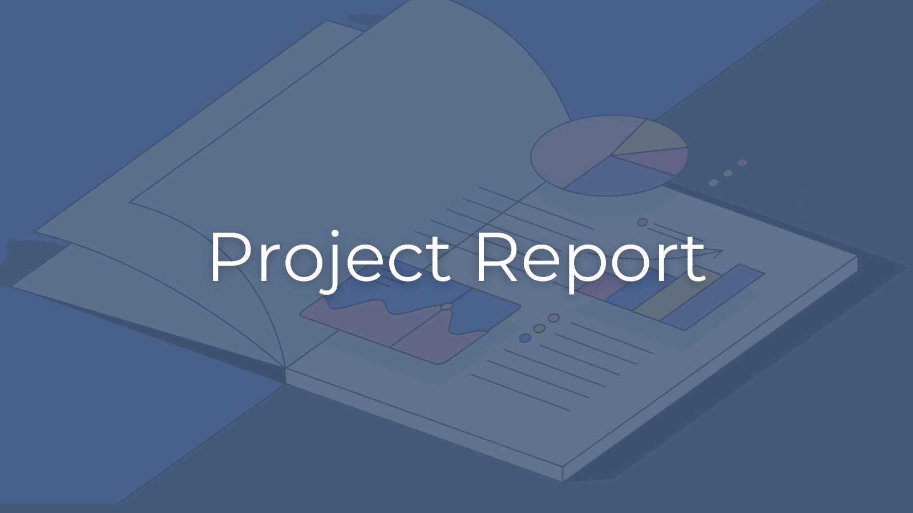
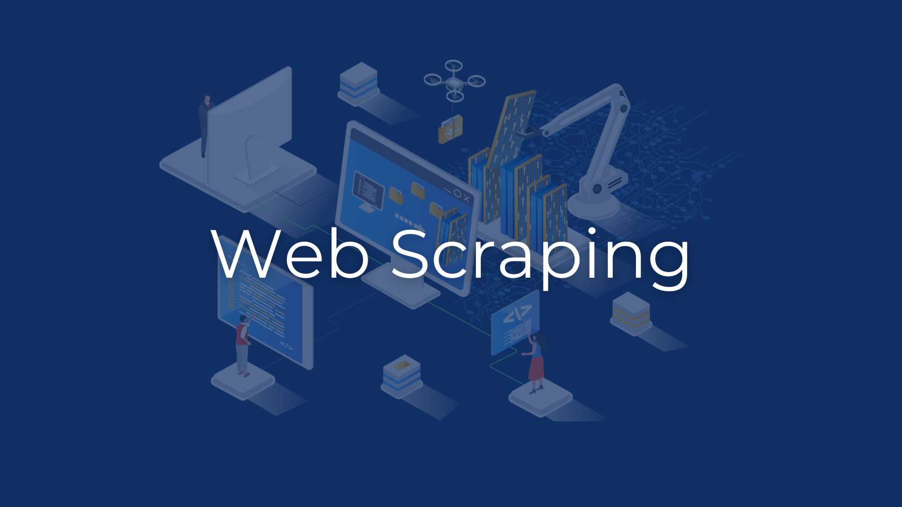
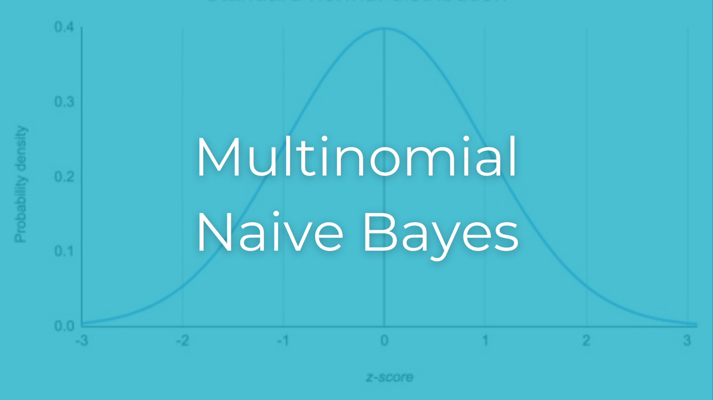
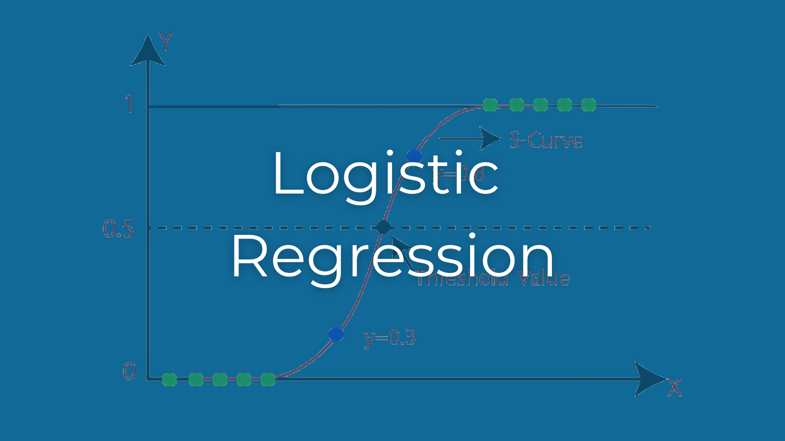
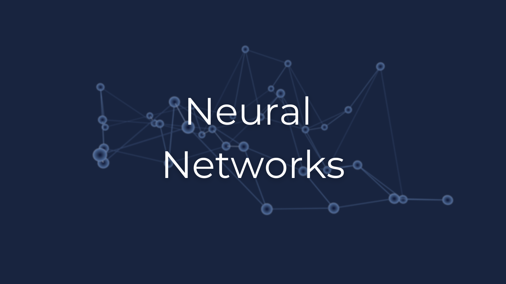

Classification of Urdu News Articles
This project explores supervised machine learning techniques to classify Urdu-language news articles into five predefined categories: entertainment, business, sports, science-technology, and international. Using data scraped from prominent Urdu news websites, a dataset of 2,750 articles was prepared, involving extensive preprocessing steps such as text normalization, lemmatization, and tokenization.
Three models were implemented and evaluated: Multinomial Naive Bayes (MNB), Logistic Regression, and Neural Networks. MNB provided a simple and effective baseline, achieving an accuracy of 96.55%, while Logistic Regression offered robust classification with a 95.27% accuracy. The Neural Network outperformed both, achieving an impressive accuracy of 97.45% through advanced sequential modeling with dropout layers to prevent overfitting.
Performance was assessed using accuracy, precision, recall, and F1 scores, with confusion matrices providing insights into misclassifications. The project highlights the potential of machine learning for natural language processing in underrepresented languages like Urdu, while identifying limitations such as reliance on traditional models and the lack of contextual semantic understanding.

Project Report
This paper aims to transform unstructured Urdu news data into categorized information, enabling a more personalized and relevant news experience. Data was collected by scraping articles from prominent Urdu news websites and categorized into predefined segments. Three machine learning models were implemented to classify the articles.

Web Scraping
The notebook features a `NewsScraper` class for scraping news articles from Urdu websites like Geo, Jang, Express, Dunya, and Dawn. It extracts headlines, links, and content from categories such as entertainment and business, organizing the data into dataFrames. Each method is tailored to the structure of its respective website, with error handling and logging.
Data Analysis
The notebook explores the complete dataset from scraping, focusing on the `gold_label` column. Using Pandas and Matplotlib, it calculates the number of unique values and their counts, providing insights into label distribution. A bar chart visualizes the label frequencies for clearer interpretation.

Multinomial Naive Bayes
Our first model classifies a dataset of Urdu-language text articles using both a manual implementation of Multinomial Naive Bayes (MNB) and Scikit-learn's MNB model. The dataset is split and the model is trained and evaluated on this. Metrics like accuracy, precision, recall, F1 score, and confusion matrices are calculated to assess performance.

Logistic Regression
Our second model preprocesses and classifies a dataset of Urdu-language text articles using both a manual implementation of Logisitic Regression and Scikit-learn's version of the model. The dataset is split and evaluated and the results from the manual implementation are compared with those from Scikit-learn to ensure consistency.

Neural Networks
Our third model classifies a dataset of Urdu-language text articles using a manual implementation of a simple sequential Neural Network. The dataset is split and the model is trained and evaluated on this. Metrics like accuracy, precision, recall, F1 score, and confusion matrices are calculated to assess performance.